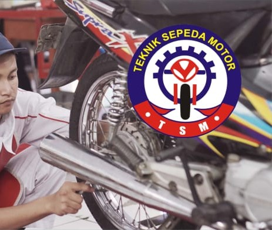

Teknik Otomotif merupakan program keahlian yang mempelajari sistem kerja kendaraan bermotor, mulai dari mesin, sistem kelistrikan, hingga perawatan dan perbaikan kendaraan.
Mempelajari cara merawat dan memperbaiki mesin kendaraan agar tetap bekerja dengan optimal.
Memahami sistem kelistrikan kendaraan seperti starter,
lampu, aki, dan sistem pengapian.

"Belajar di jurusan Otomotif membuat saya lebih memahami dunia kendaraan dan siap bekerja di bengkel profesional."
- Firda, Alumni 2028